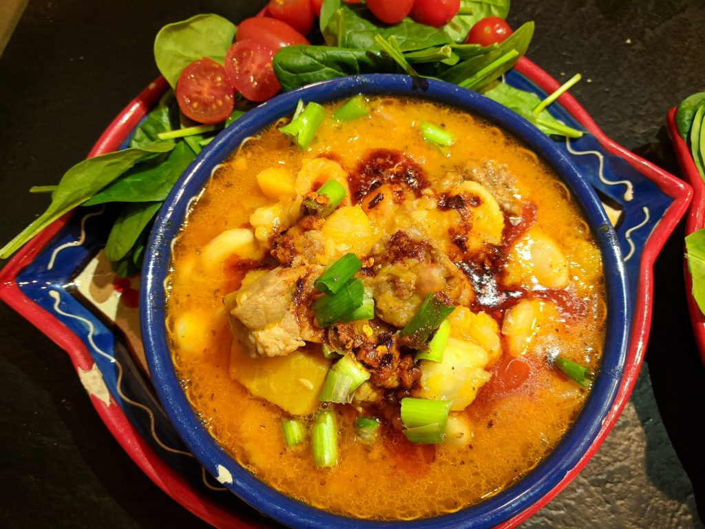

Description
The Argentina national dish known as Locro is a must-try hearty soup. It iss the perfect meal for cold days and surprisingly, is fairly easy to make at home. The best thing is that you can make this Argentinian stew up to two days in advance.
Ingredients
- 1 1/2 pounds of pork ribs
- 1 pound of flank steak (Argentinian beef preferred)
- 1 pound beef short ribs, cut between bones
- 5 sausage links (spanish chorizo is fine)
- 3 quarts water
- 6 sliced carrots
- 1/2 pounds butternut squash, cubed
- 1 peeled potato, cubed
- 2 red bell peppers, chopped
- 1 tablespoon paprika
- 3 cans white hominy, rinsed
- 2 cans white beans, rinsed
- 1 tablespoon salt
- 1 tablespoon black pepper
Steps
- Once you have finished cutting the meat, add it to a large pot with the water. Let it come to a boil.
- Reduce the heat to a simmer, partially covered for 3.5 hours.
- Then, add the vegetables and paprika and let simmer for 30 minutes, stirring occasionally. Check that the vegetables are tender.
- Next, add the beans, hominy, salt, and pepper and simmer for another 15 minutes.
- Serve the locro and enjoy